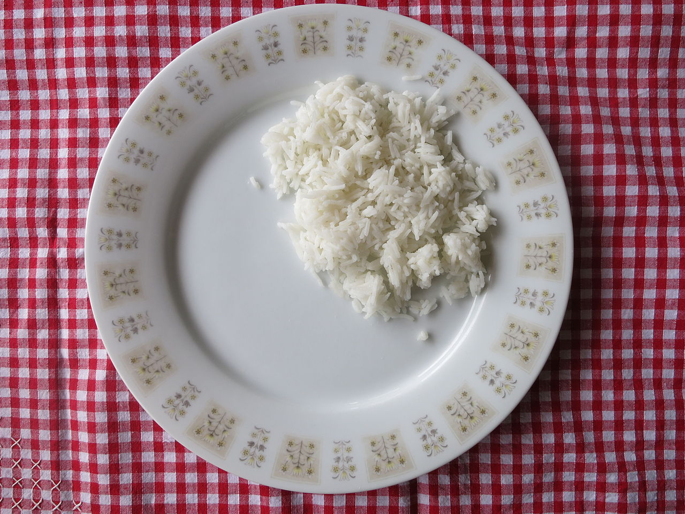

White Rice

Description
White rice is milled rice that has had its husk, bran, and germ removed. This alters the flavor, texture and appearance of the rice and helps prevent spoilage, extend its storage life, and makes it easier to digest. After milling (hulling), the rice is polished, resulting in a seed with a bright, white, shiny appearance.
Ingredients
2 teaspoons unsalted butter
1 cup uncooked long-grain white rice
2 cups water
½ teaspoon salt
Steps
- Melt butter in a medium saucepan over medium heat. Add rice and stir to coat. Cook until rice grains begin to turn opaque, 1 to 2 minutes; do not brown. Add water and salt.
- Bring to a boil; reduce heat to low. Cover and let simmer for 15 minutes. Do not lift the lid.
- Remove from heat and let stand, covered, for 5 minutes. Fluff with a fork before serving.